EmbeddedOre
48×32 · 10 opaque colors · binary alpha
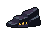
User approved for the main playable zone. Actual Game scene captures. Left: ore-loading crate on track and connected rock. Right: anchored timber brace, pickaxe and supply crate. All other environment placements and shared UI are preserved.
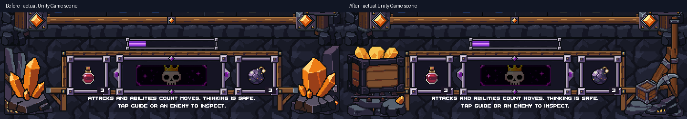
Direct crops from the 720×1280 Unity captures. Captures are separate launches, so idle poses, assigned weakness gems and ambient animation can differ.
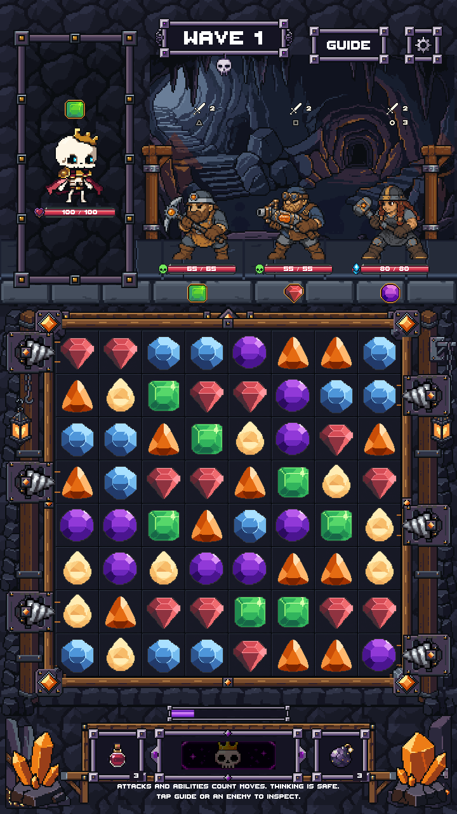
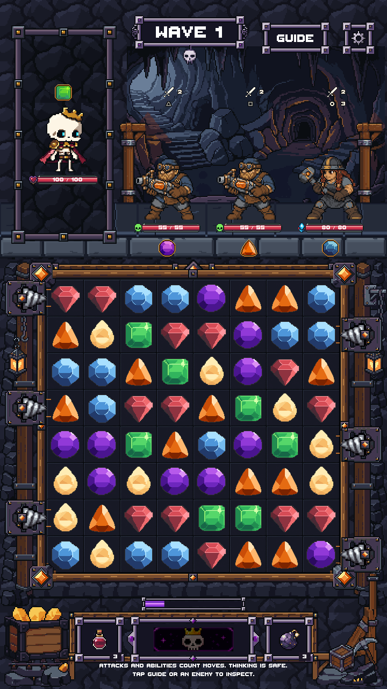
Open either image for its original capture resolution. Automated Unity testing, not physical-phone testing.
48×32 · 10 opaque colors · binary alpha

64×32 · 8 opaque colors · binary alpha
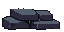
64×32 · 8 opaque colors · binary alpha
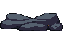
64×56 · 11 opaque colors · binary alpha
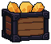
32×32 · 12 opaque colors · binary alpha
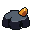
32×48 · 10 opaque colors · binary alpha
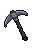
64×24 · 7 opaque colors · binary alpha
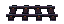
32×32 · 10 opaque colors · binary alpha
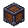
48×72 · 9 opaque colors · binary alpha
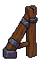
48×96 · 10 opaque colors · binary alpha
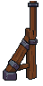
Validation report · PixelLab ledger · Protected-file checks · Native sprite checks
90 PixelLab generations. Raw candidates, selection reasons and all editable sources are preserved. No source art was deleted or overwritten.